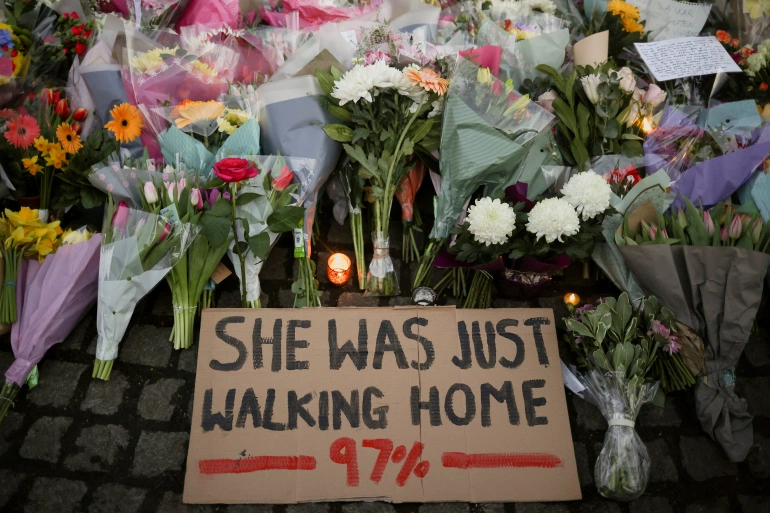

Throughout March and April 2021, there were rumors and videos going around of men claiming that they were going to take what was their's and put women in their place by making April 24th National Rape Day. This came about with the rise in Tik Tok spreading awareness of the 97%, and also from the rise of people sharing their own experiences and traumas. This terrified women, making them feel less safe in a world that already makes them fear for their lives.
In early March 2021 there was a study that revealed 97% of women in the United Kingdom between the ages of 18 and 24 have been victimes of sexual assault in public places. The release of this study caused a trend to appear on TikTok trying to educate the users of TikTok of the study and raise awareness to the fact it was 97% of women that were sexually assaulted. That means only 3% are not victims, impying that most likely multiple women you know have been sexually assaulted or have a high chance of it. Which is what this forum is for, bringing awareness to the traumas that many women go through just because they were born female and not male. It is also to share the experiences and show that you are not alone, and there are people out there that can relate and help you through whatever you are going through. It is also to show men that women, and men, are out there fighting their own battles that we can all help put a stop to. We just need to educate and make sure future generations are better than we are.
